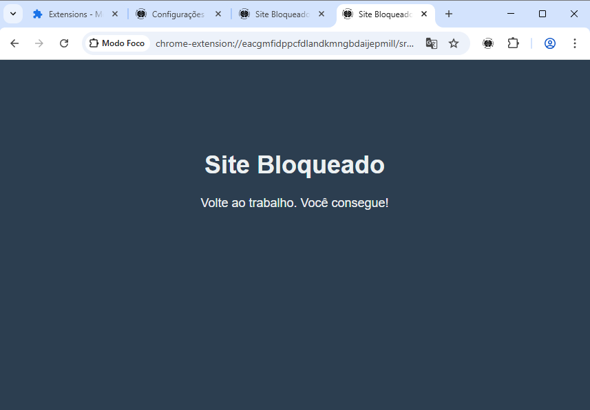
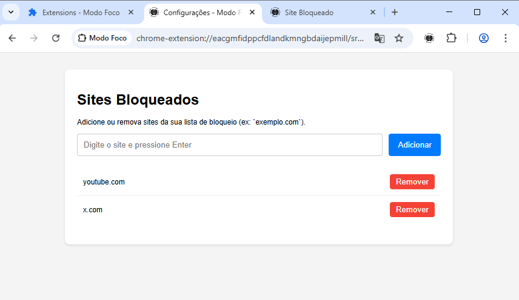

Modo Foco - Extensão para Chrome
Aumente sua produtividade bloqueando distrações.
Modo Foco é uma extensão para o Google Chrome (Manifest V3) projetada para ajudar você a se concentrar em suas tarefas. Defina um timer, escolha os sites que mais te distraem e deixe a extensão cuidar do resto.
Exemplos de funcionamento
O pop-up fica disponível para ligar ou desligar o modo de foco, onde também podemos customizar o timer de foco que o usuário desejar

Depois de ligar o modo foco o site fica bloqueado enquanto o modo foco estiver ativo
Também é possível customizar os sites que serão bloqueados pelo pop-up. Por padrão alguns sites já vem bloqueados
Como Instalar
- Baixe a versão mais recente pelo botão abaixo.
- Descompacte o arquivo
.zip. - No Chrome, acesse
chrome://extensions. - Ative o "Modo de desenvolvedor".
- Clique em "Carregar sem compactação" e selecione a pasta que você extraiu.
Permissões Necessárias
storage: Para salvar sua lista de sites bloqueados e o estado do timer.tabs: Para verificar a URL das abas e redirecionar se necessário.alarms: Para controlar o tempo do período de foco.